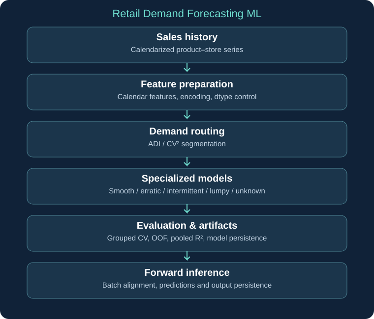

← PortfolioRetail Demand Forecasting ML
Historical engineering case study
Interactive conceptual walkthrough. No original code runs, no live systems are connected and no enterprise data is used.

Explore the stages
1. Sales history
Calendarized product–store series
2. Feature preparation
Calendar features, encoding, dtype control
3. Demand routing
ADI / CV² segmentation
4. Specialized models
Smooth / erratic / intermittent / lumpy / unknown
5. Evaluation & artifacts
Grouped CV, OOF, pooled R², model persistence
6. Forward inference
Batch alignment, predictions and output persistence
Illustrative demand routing
Choose a fictional demand pattern. This is a conceptual selector, not a trained model or a prediction.
Technical contributions
Demand classification
Designed demand-aware routing instead of one universal model.Model engineering
Developed regression and two-stage modelling paths.Scalable processing
Implemented dtype control, batch processing and feature alignment.Evaluation
Implemented grouped evaluation and out-of-fold metrics.Operational integration
Developed forward forecasting and SQL output integration.Some q60/q90-labelled regressors use squared-error objectives. Residual-based diagnostics are not verified SHAP. A strict temporal splitter exists but its use and leakage controls require validation. No independently verified forecast accuracy or business impact is claimed. Confirm individual contribution and publication rights.
View GitHub case studyExplore executed synthetic results (V3)